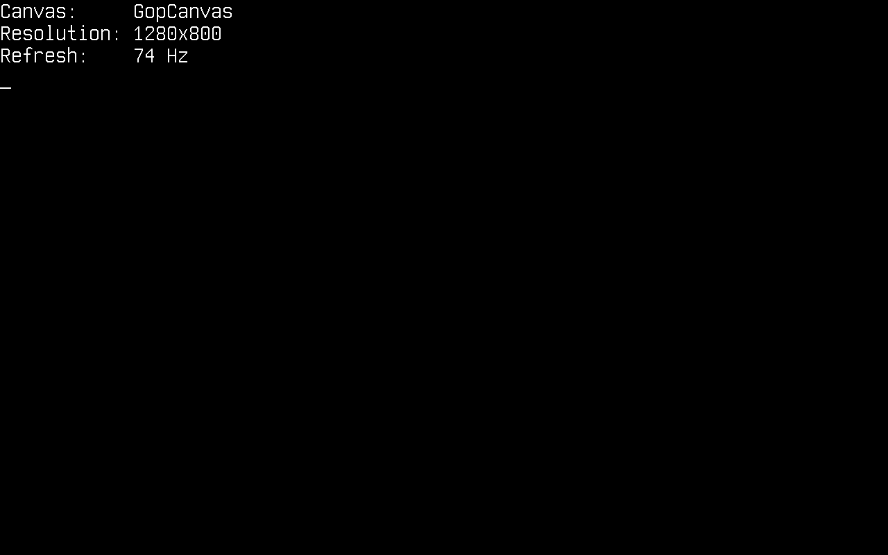
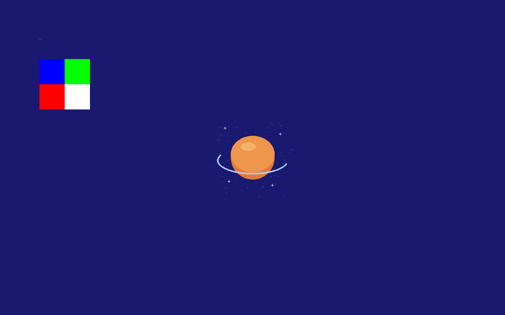
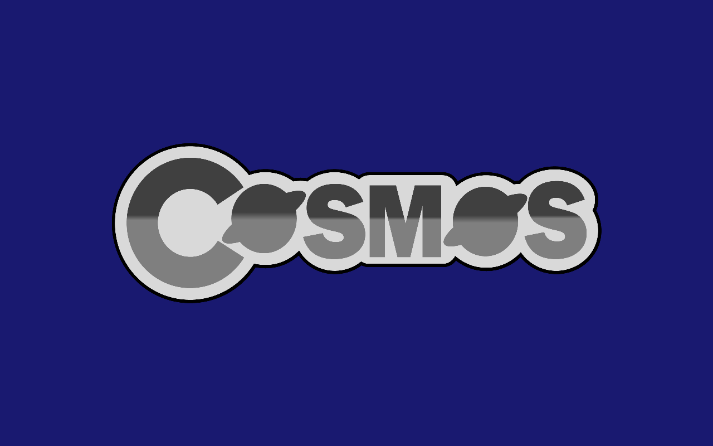
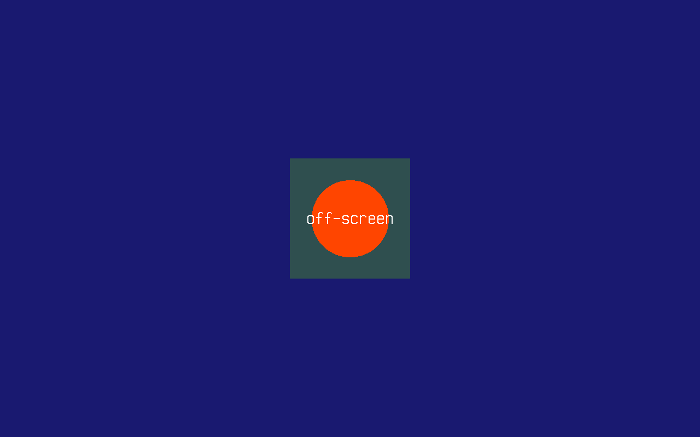

Graphismes
Dans cet article, nous verrons le Cosmos Graphics Subsystem (CGS) sur Cosmos Gen3 : comment obtenir une surface de dessin et placer à l'écran des formes, du texte et des images. CGS repose sur l'abstraction d'un Canvas, un espace vide sur lequel vous dessinez. C'est une couche de dessin, pas une bibliothèque de widgets : il n'y a ni fenêtres ni boutons, mais tout ce qu'il faut pour les construire.
Les principales différences si vous venez de Gen2 :
| Gen2 | Gen3 | |
|---|---|---|
| API Canvas | Cosmos.System.Graphics |
La même API, dans Cosmos.Kernel.System.Graphics |
| Pilotes vidéo | VBE, VGA, VMWare SVGA II | Le framebuffer du firmware que Limine transmet (x64 et ARM64), plus les pilotes d'affichage que publie le kit de pilotes : virtio-gpu, VMware SVGA II, AMD DCN 3.1.5 (la partie graphique Radeon des processeurs Ryzen 7000 et 9000) et les puces graphiques intégrées Intel (processeurs Core de la 2e à la 14e génération) |
Display() |
Requis sur les pilotes à double tampon | Toujours requis : le canvas utilise un double tampon |
| Mode vidéo | Modifiable à l'exécution | Modifiable sur un écran qui offre IDisplayModes (l'adaptateur VMware SVGA II) ; fixé au démarrage sinon |
| Console texte | Mode texte VGA séparé | Rendue sur le même canvas |
| Couleurs | System.Drawing.Color |
System.Drawing.Color |
Si vous trouvez des bugs ou quelque chose d'anormal, merci de soumettre une issue sur notre dépôt.
Activer les graphismes dans votre noyau
La prise en charge graphique dépend d'un commutateur de fonctionnalité. Assurez-vous que le .csproj de votre noyau ne la désactive pas (sa valeur par défaut est true) :
<PropertyGroup>
<CosmosEnableGraphics>true</CosmosEnableGraphics>
</PropertyGroup>
Voici les directives using sur lesquelles s'appuient les extraits ci-dessous :
using System.Diagnostics;
using System.Drawing;
using System.IO;
using System.Numerics;
using Cosmos.Kernel.System.Graphics;
using Cosmos.Kernel.System.Graphics.Fonts;
using Cosmos.Kernel.System.Graphics.Rendering3D;
using Cosmos.Kernel.System.Input;
Obtenir un canvas
Canvas.GetFullScreen() renvoie le canvas de l'écran principal trouvé par le kit de pilotes : le framebuffer que le chargeur d'amorçage a configuré au démarrage, ou l'écran qu'un pilote d'affichage a publié. Name indique lequel, sous la forme du nom du pilote suivi de celui de l'écran, et vaut firmware framebuffer sur le framebuffer de démarrage :
Canvas canvas = Canvas.GetFullScreen();
Console.WriteLine("Canvas: " + canvas.Name);
Console.WriteLine("Resolution: " + canvas.Width + "x" + canvas.Height);
Console.WriteLine("Refresh: " + canvas.RefreshRate + " Hz");

Quatre choses à savoir avant de commencer à dessiner :
- La résolution est fixée au démarrage, sauf si l'écran change de mode. Sur le framebuffer du firmware et sur virtio-gpu, demander un autre
Modene reprogramme rien : la demande est ignorée et le canvas garde la résolution dans laquelle se trouve l'écran. Un écran qui offreIDisplayModes, aujourd'hui l'adaptateur VMware SVGA II, change de mode parCanvas.GetFullScreen(Mode), qui lèveArgumentOutOfRangeExceptionpour un mode que l'écran refuse. Utilisezcanvas.Widthetcanvas.Heightplutôt que de supposer une résolution, dans un cas comme dans l'autre. - Rien n'apparaît tant que vous n'appelez pas
Display(). Le canvas utilise un double tampon : chaque appel de dessin écrit dans un tampon arrière, etDisplay()copie l'image terminée dans le framebuffer de l'écran, puis demande à l'écran de la transmettre à l'affichage (flush). Dessinez toute l'image, puis appelezDisplay()une seule fois ; c'est aussi ce qui évite le scintillement des animations. - Dessiner hors du canvas est sans danger. Chaque primitive est découpée aux bords : les pixels hors de
0..Width-1et0..Height-1sont ignorés, une forme qui chevauche un bord est dessinée jusqu'à lui, et rien ne lève d'exception. Les coordonnées n'ont jamais besoin d'être bornées avant un appel. Consolepartage l'écran avec vous. Il n'y a pas de mode texte séparé :Console.WriteLineest lui-même rendu sur le canvas plein écran (et appelleDisplay()à chaque écriture). Une fois que vous commencez à dessiner, cessez d'écrire dansConsole: l'écriture suivante peindrait du texte par-dessus vos graphismes. Cela signifie aussi qu'une exception non interceptée s'affiche par-dessus ce que vous avez dessiné, ce qui, contrairement à Gen2 où l'écran se figeait simplement, vous indique au moins ce qui s'est mal passé.
Le canvas est mis en cache : chaque appel à GetFullScreen() renvoie le même jusqu'à DisableFullScreen(). Un canvas dont l'écran a été retiré (son pilote délié, ou l'écran du firmware mis hors service après qu'un pilote a pris en charge l'adaptateur) est la seule exception : Display() n'y copie rien, et le prochain GetFullScreen() ou GetFullScreen(Mode) le remplace par un canvas sur l'écran qui est désormais l'écran principal.
Dessiner des formes
Le canvas propose l'ensemble classique de primitives (points, lignes, rectangles, cercles, ellipses, arcs, triangles et polygones), la plupart en version contour et en version pleine :
Canvas canvas = Canvas.GetFullScreen();
canvas.Clear(Color.MidnightBlue);
/* A single point */
canvas.DrawPoint(Color.White, 100, 100);
/* Lines: horizontal, vertical and diagonal */
canvas.DrawLine(Color.GreenYellow, 250, 100, 400, 100);
canvas.DrawLine(Color.IndianRed, 350, 150, 350, 250);
canvas.DrawLine(Color.MintCream, 250, 150, 400, 250);
/* Outlined and filled rectangles */
canvas.DrawRectangle(Color.PaleVioletRed, 450, 100, 120, 80);
canvas.DrawFilledRectangle(Color.Chocolate, 450, 220, 120, 80);
/* Circles and ellipses */
canvas.DrawCircle(Color.Chartreuse, 130, 200, 40);
canvas.DrawFilledCircle(Color.MediumOrchid, 130, 320, 40);
canvas.DrawEllipse(Color.DeepSkyBlue, 300, 350, 60, 30);
/* An arc: angles are in degrees */
canvas.DrawArc(Color.CadetBlue, 500, 400, 50, 50, 90, 270);
/* Triangles and polygons */
canvas.DrawTriangle(Color.Gold, 600, 100, 650, 200, 550, 200);
canvas.DrawPolygon(Color.MediumPurple,
new Point(650, 300), new Point(720, 340), new Point(700, 420), new Point(620, 400));
/* Swap the finished frame to the screen */
canvas.Display();

Les couleurs sont de simples valeurs System.Drawing.Color : toute la palette nommée (Color.MidnightBlue, Color.Chartreuse, ...) et Color.FromArgb(...) sont donc disponibles. Les couleurs dont le canal alpha est inférieur à 255 sont mélangées avec le pixel déjà présent sur le canvas.
Dessiner du texte
Le rendu du texte utilise des polices bitmap PSF (PC Screen Font), le format de la console Linux, dans ses deux versions PSF1 et PSF2. Une police Spleen 16x32 est intégrée sous le nom PCScreenFont.DefaultFont, et PCScreenFont.LoadFont(byte[]) charge n'importe quelle autre police PSF à l'exécution.
Il existe de nombreuses polices PSF prêtes à télécharger :
- Les polices de console du Zap Group : des polices PSF1 8x16 classiques (
zap-light16.psf,zap-vga16.psf). - Terminus : du PSF2 en de nombreuses tailles ; la plupart des distributions Linux la fournissent déjà sous
/usr/share/consolefonts/sous forme de fichiers.psf.gz(décompressez-les d'abord avecgunzip, le noyau lit du.psfnon compressé). - Spleen : des versions PSF2 de 5x8 jusqu'à 32x64.
Une police n'est qu'un fichier : le plus simple pour en livrer une est donc de la placer sur le disque FAT de l'article Système de fichiers. Ici, zap16.psf est Zap Light (PSF1) et term24.psf est Terminus 12x24 (PSF2), copiées sur le disque sous des noms compatibles avec FAT :
Canvas canvas = Canvas.GetFullScreen();
canvas.Clear(Color.MidnightBlue);
/* The built-in 16x32 font */
Font font = PCScreenFont.DefaultFont;
canvas.DrawString("Hello Cosmos World!", font, Color.White, 100, 100);
canvas.DrawString("Spleen " + font.Width + "x" + font.Height + " (built in)",
font, Color.GreenYellow, 100, 140);
/* Load a PSF1 font from the mounted disk... */
Font zap = PCScreenFont.LoadFont(File.ReadAllBytes("/mnt/zap16.psf"));
canvas.DrawString("Zap Light " + zap.Width + "x" + zap.Height + " (PSF1)",
zap, Color.Gold, 100, 200);
/* ...and a PSF2 font */
Font terminus = PCScreenFont.LoadFont(File.ReadAllBytes("/mnt/term24.psf"));
canvas.DrawString("Terminus " + terminus.Width + "x" + terminus.Height + " (PSF2)",
terminus, Color.DeepSkyBlue, 100, 240);
canvas.Display();

Polices TrueType
Les polices PSF sont des bitmaps : une taille, une cellule, aucune courbe. Pour une vraie typographie, la classe TrueTypeFont charge un fichier .ttf et le rastérise à n'importe quelle taille en pixels, avec des bords anticrénelés, une largeur propre à chaque glyphe et le crénage par paires. L'analyseur et le rastériseur sont du pur code managé (voir la page Crédits) : un fichier de police mal formé lève donc une exception au lieu de corrompre la mémoire.
TrueTypeFont dérive de Font : elle s'utilise donc partout où une police bitmap s'utilise. Passée à la surcharge simple de DrawString, elle dessine à sa taille SizePx (fixée dans le constructeur, 16 par défaut). La surcharge dédiée prend la taille explicitement, et chaque paire (caractère, taille) est rastérisée une seule fois puis mise en cache, si bien que redessiner le même texte coûte peu :
Canvas canvas = Canvas.GetFullScreen();
canvas.Clear(Color.MidnightBlue);
/* Load a TrueType font from the mounted disk */
TrueTypeFont dejavu = new TrueTypeFont("/mnt/font.ttf");
canvas.DrawString("Hello from a TrueType font!", dejavu, 44, Color.White, 60, 60);
canvas.DrawString("Anti-aliased, kerned and scalable to any size.", dejavu, 24, Color.Gold, 60, 130);
/* One font file, any size */
int y = 200;
foreach (int size in new[] { 14, 20, 28, 40 })
{
canvas.DrawString("Cosmos at " + size + "px - AV To Wa", dejavu, size, Color.DeepSkyBlue, 60, y);
y += dejavu.GetLineHeight(size) + 10;
}
canvas.Display();

Le (x, y) que vous passez est le coin supérieur gauche de la ligne de texte, comme pour la surcharge PSF. Pour la mise en page, MeasureString(text, size) renvoie la largeur qu'occupera une chaîne, GetLineHeight(size) la distance entre les hauts de deux lignes, et GetLineMetrics(size, out ascent, out descent, out lineGap) les métriques sous-jacentes, relatives à la ligne de base. Le crénage provient de l'ancienne table kern de la police ; les polices qui ne fournissent qu'un crénage GPOS s'affichent quand même, simplement sans ajustement par paires.
Dessiner des images
Les images sont représentées par la classe Bitmap. Vous pouvez en construire une dans le code à partir de données de pixels brutes, chaque pixel occupant quatre octets dans l'ordre B, G, R, A :
Canvas canvas = Canvas.GetFullScreen();
canvas.Clear(Color.MidnightBlue);
/* A 2x2 bitmap: blue, green, red and white pixels (B G R A byte order) */
Bitmap bitmap = new Bitmap(2, 2, new byte[]
{
255, 0, 0, 255, // blue
0, 255, 0, 255, // green
0, 0, 255, 255, // red
255, 255, 255, 255, // white
}, ColorDepth.ColorDepth32);
/* Draw it pixel-for-pixel, then scaled up to 128x128 */
canvas.DrawImage(bitmap, 100, 100);
canvas.DrawImage(bitmap, 100, 150, 128, 128);
canvas.Display();
Chaque dessin d'image et de canvas (DrawImage, CroppedDrawImage et DrawCanvas, à taille réelle ou étiré) pose chaque pixel sur le canvas selon son alpha : un pixel opaque remplace ce qui s'y trouve, un pixel transparent le laisse intact, et un pixel intermédiaire mélange les deux couleurs, le résultat restant opaque sur un canvas opaque. Chacun accepte un dernier argument facultatif, opacity, de 0 (rien n'est dessiné) à 255 par défaut (l'alpha propre des pixels), qui estompe l'ensemble du dessin. Sur un pixel lui-même translucide ou transparent, les alphas se combinent : un canvas hors écran effacé avec Color.Transparent recueille donc ce qu'on dessine dessus en conservant sa transparence, prêt à être dessiné comme un calque (voir Canvas hors écran). Un DrawPoint translucide se mélange de la même manière. DrawArray est le seul dessin qui copie les pixels bruts, alpha compris, en remplaçant ce qui s'y trouvait. Aucun de ces dessins n'alloue de mémoire.
Plus utile encore, Bitmap peut charger un fichier BMP non compressé de 24 ou 32 bits via le System.IO standard, par exemple depuis un disque FAT monté comme le montre l'article Système de fichiers :
/* logo.bmp is a 24-bit BMP on the FAT partition mounted at /mnt */
Bitmap logo = new Bitmap(@"/mnt/logo.bmp");
canvas.DrawImage(logo,
(canvas.Width - logo.Width) / 2,
(canvas.Height - logo.Height) / 2);
canvas.Display();

Les fichiers PNG fonctionnent de la même manière grâce à la classe Png, elle aussi une Image : elle s'utilise donc partout où un Bitmap s'utilise. Le format est entièrement pris en charge (niveaux de gris, couleurs vraies et palette, avec ou sans alpha, entrelacé ou non) et décodé par du pur code managé (voir la page Crédits). Ses pixels transparents se mélangent avec ce qui se trouve déjà sur le canvas :
/* logo.png is a PNG with transparency on the FAT partition mounted at /mnt */
Png logo = new Png("/mnt/logo.png");
/* Draw it scaled to half size, centered: transparent pixels blend with the background */
int width = logo.Width / 2;
int height = logo.Height / 2;
canvas.DrawImage(logo, (canvas.Width - width) / 2, (canvas.Height - height) / 2, width, height);
canvas.Display();

Un BMP 32 bits dont le quatrième octet vaut 0 dans chaque pixel, comme beaucoup de logiciels l'enregistrent, n'a pas d'alpha : il se charge opaque. DrawImage(image, destination, source) étire uniquement la région source de l'image sur le rectangle destination, tous deux des System.Drawing.Rectangle, et c'est avec lui qu'on dessine un cadre de fenêtre découpé dans une seule image de skin en coins, bords et centre (un cadre en neuf parties). canvas.GetImage(x, y, width, height) fait l'inverse d'un dessin : il recopie une région du canvas dans un Bitmap.
Canvas hors écran
Un Canvas n'est pas forcément l'écran. En construire un avec une taille vous donne un canvas en mémoire doté exactement de la même API de dessin. Composez une tuile ou un sprite une fois, puis copiez-le à l'écran avec DrawCanvas autant de fois que vous le voulez :
Canvas canvas = Canvas.GetFullScreen();
canvas.Clear(Color.MidnightBlue);
/* Compose off-screen... */
Canvas tile = new Canvas(220, 220);
tile.Clear(Color.DarkSlateGray);
tile.DrawFilledCircle(Color.OrangeRed, 110, 110, 70);
tile.DrawString("off-screen", PCScreenFont.DefaultFont, Color.White, 30, 94);
/* ...then blit it to the screen wherever it is needed */
canvas.DrawCanvas(tile, (canvas.Width - 220) / 2, (canvas.Height - 220) / 2);
canvas.Display();

La tuile ci-dessus est opaque : elle apparaît donc comme un carré. Pour composer plutôt des calques, comme le fait un gestionnaire de fenêtres, effacez le canvas hors écran avec Color.Transparent et dessinez dessus. DrawCanvas laisse alors ses pixels transparents montrer ce qui se trouve dessous, mélange ses pixels translucides et estompe tout le calque selon l'argument facultatif opacity :
/* A window with a translucent title bar, faded to 80% over the desktop */
Canvas window = new Canvas(300, 200);
window.Clear(Color.Transparent);
window.DrawFilledRectangle(Color.FromArgb(160, 0, 0, 128), 0, 0, 300, 24);
window.DrawFilledRectangle(Color.Silver, 0, 24, 300, 176);
canvas.DrawCanvas(window, 100, 100, 204);
DrawCanvas(canvas, x, y, width, height) étire la source à width sur height, au plus proche voisin, sans allouer. Dessiner toute une interface sur un canvas hors écran plus petit et l'étirer sur l'écran une fois par image, c'est ainsi qu'on la met à l'échelle 150 % ou 200 % : un canvas de 1280x720 étiré en 1920x1080 donne 150 %, et une ligne qui répète une ligne opaque située au-dessus d'elle est copiée plutôt qu'échantillonnée à nouveau :
Canvas screen = Canvas.GetFullScreen();
Canvas ui = new Canvas(screen.Width * 2 / 3, screen.Height * 2 / 3);
/* ...draw the interface on ui at its own size... */
screen.DrawCanvas(ui, 0, 0, screen.Width, screen.Height);
screen.Display();
Les coordonnées du pointeur doivent alors suivre la même échelle : MouseManager.SetScreenSize(ui.Width, ui.Height) fait que la souris rapporte des positions sur ui plutôt que sur l'écran.
Relire les pixels
GetPointColor renvoie la couleur d'un pixel déjà présent sur le canvas :
canvas.DrawPoint(Color.Red, 69, 69);
Color color = canvas.GetPointColor(69, 69); // Color.Red
Rendu 3D
La 3D est accessible lorsque l'écran principal implémente ICanvas3DFactory, la facette qu'un pilote d'affichage place sur son écran quand le périphérique sait faire du rendu 3D ; Canvas.GetFullScreen() la demande à l'écran et, lorsqu'elle est présente, renvoie le Canvas3D propre au pilote. Un seul des pilotes livrés le fait aujourd'hui : VmwareSvgaDriver, pour l'adaptateur VMware SVGA II, et seulement quand l'adaptateur négocie SVGA3D pendant l'initialisation de la FIFO. Tout autre écran, y compris le framebuffer du firmware sur lequel cosmos run démarre sur les deux architectures et virtio-gpu, renvoie un Canvas simple. Le vmware-svga de QEMU ne négocie jamais la 3D non plus : en pratique, il faut donc un vrai VMware Workstation ou ESXi.
La machine virtuelle doit aussi présenter l'adaptateur sous sa forme antérieure aux objets guest-backed. Dès qu'il annonce SVGA_CAP_GBOBJECTS, les capacités 3D passent à une interface de registres que le pilote ne connaît pas, la version 3D dans la FIFO reste à 0 et le canvas revient en 2D. C'est en abaissant le niveau de compatibilité matérielle de la machine qu'on garde l'adaptateur sur l'ancien modèle. Ces deux réglages fonctionnent sur VMware Workstation 25 :
virtualHW.version = "10"
mks.enable3D = "TRUE"
La version à partir de laquelle un adaptateur annonce les objets guest-backed dépend du build de VMware : vérifiez donc le résultat plutôt que de vous fier à un numéro. Le pilote l'affiche sur le port série lorsqu'il est lié à l'adaptateur :
[Drivers] pci:0000:00:01.0 VmwareSvgaDriver: 640x480x32 disabled, caps 0x3, svga3d none, vram 16 MiB, fifo 64 KiB
Ici, svga3d none signifie que Canvas.GetFullScreen() renverra un Canvas simple ; abaissez le niveau de compatibilité jusqu'à ce que la ligne porte une version à la place, svga3d 2.1 pour la version matérielle 0x20001 que rapporte l'ancien modèle. Le premier champ est la sortie d'affichage (scanout) telle que le firmware l'a laissée, disabled sur QEMU jusqu'à ce que la console programme un mode.
Comme cette capacité n'est connue qu'à l'exécution, il n'existe pas de GetFullScreen3D. Un noyau obtient le canvas de la manière habituelle et teste ce qu'il a reçu :
Canvas canvas = Canvas.GetFullScreen();
if (canvas is Canvas3D canvas3D)
{
canvas3D.Camera = new Camera3D(new Vector3(0f, 0f, 5f), Vector3.Zero);
canvas3D.ClearScene(Color.Black);
canvas3D.DrawCube(Vector3.Zero, new Vector3(1f, 1f, 1f), Color.OrangeRed);
canvas3D.DrawGrid(10, 1f, Color.DimGray);
canvas3D.Display();
}
Les types 3D, Canvas3D, Camera3D, Mesh, MeshTopology, Texture et ICanvas3DFactory, se trouvent dans Cosmos.Kernel.System.Graphics.Rendering3D, que les directives using en haut de cette page importent à côté de l'espace de noms 2D. Canvas3D est un Canvas : tous les appels 2D fonctionnent donc toujours dessus, et Display() présente l'image dans les deux cas. Les maillages viennent de CreateMesh et les textures de CreateTexture(Image) ; DrawMesh(mesh, world) place un maillage avec une transformation. Libérer une texture (Dispose) libère sa mémoire sur le périphérique, et DrawMesh rejette un maillage qui y fait encore référence.
Un pilote d'affichage peut implémenter Canvas3D : son constructeur prend le DisplayDevice sur lequel le canvas dessine, et un paquet de pilote en dérive, construit ses cibles de rendu à partir de Width et Height, les recrée dans OnModeChanged, présente la scène dans une redéfinition de Display() (en se rabattant sur la classe de base pour une image 2D) et libère tout dans Disable(), en conservant son état par ressource dans les handles Mesh et Texture grâce aux méthodes utilitaires protégées. Le canvas du pilote SVGA dans Cosmos.Kernel.Drivers est écrit ainsi, sur le point d'extension public, et un noyau ne l'atteint que sous la forme d'un Canvas3D. Un noyau qui veut de la 3D utilise Canvas.GetFullScreen().
Un cube que la souris fait rouler
Ces appels suffisent pour toute une scène : un maillage avec une couleur par face, au-dessus de la grille du sol. Le pointeur commande le roulement : plus il est loin du centre de l'écran, plus le cube roule vite dans cette direction.
if (Canvas.GetFullScreen() is not Canvas3D canvas3D)
{
Console.WriteLine("This display device has no 3D.");
return;
}
MouseManager.SetScreenSize(canvas3D.Width, canvas3D.Height);
canvas3D.Camera = new Camera3D(new Vector3(0f, 2.6f, 4.6f), new Vector3(0f, 0.9f, 0f));
/* One quad per face, four vertices each: the faces share no vertices, so a
corner does not blend three colors into an unreadable rotation. */
const float H = 0.5f;
ReadOnlySpan<Vector3> positions =
[
new(H, -H, H), new(H, -H, -H), new(H, H, -H), new(H, H, H), // +X
new(-H, -H, -H), new(-H, -H, H), new(-H, H, H), new(-H, H, -H), // -X
new(-H, H, H), new(H, H, H), new(H, H, -H), new(-H, H, -H), // +Y
new(-H, -H, -H), new(H, -H, -H), new(H, -H, H), new(-H, -H, H), // -Y
new(-H, -H, H), new(H, -H, H), new(H, H, H), new(-H, H, H), // +Z
new(H, -H, -H), new(-H, -H, -H), new(-H, H, -H), new(H, H, -H), // -Z
];
ReadOnlySpan<Color> faceColors =
[
Color.Crimson, Color.MediumSeaGreen, Color.Gold,
Color.DarkOrange, Color.DodgerBlue, Color.MediumOrchid,
];
Span<uint> colors = stackalloc uint[positions.Length];
Span<ushort> indices = stackalloc ushort[faceColors.Length * 6];
for (int face = 0; face < faceColors.Length; face++)
{
uint argb = (uint)faceColors[face].ToArgb();
int first = face * 4;
for (int corner = 0; corner < 4; corner++)
{
colors[first + corner] = argb;
}
/* Two triangles per quad, sharing the 0-2 diagonal. */
int index = face * 6;
indices[index] = (ushort)first;
indices[index + 1] = (ushort)(first + 1);
indices[index + 2] = (ushort)(first + 2);
indices[index + 3] = (ushort)(first + 2);
indices[index + 4] = (ushort)(first + 3);
indices[index + 5] = (ushort)first;
}
Mesh cube = canvas3D.CreateMesh(positions, colors, indices);
Quaternion orientation = Quaternion.Identity;
long previous = Stopwatch.GetTimestamp();
while (true)
{
long now = Stopwatch.GetTimestamp();
float elapsed = (float)(now - previous) / Stopwatch.Frequency;
previous = now;
/* Where the mouse points, read as a push on the ground plane: 0 at the
center of the screen, 1 at the edges. */
Vector3 drive = new(
(MouseManager.X - canvas3D.Width * 0.5f) / (canvas3D.Width * 0.5f),
0f,
(MouseManager.Y - canvas3D.Height * 0.5f) / (canvas3D.Height * 0.5f));
/* A cube rolling that way turns about the axis perpendicular to both the
ground normal and the push, on top of a slow idle spin about Y. */
Vector3 spin = (Vector3.Cross(Vector3.UnitY, drive) * 3.5f) + (Vector3.UnitY * 0.6f);
orientation = Quaternion.Normalize(Quaternion.Concatenate(
orientation,
Quaternion.CreateFromAxisAngle(Vector3.Normalize(spin), spin.Length() * elapsed)));
canvas3D.ClearScene(Color.FromArgb(0x10, 0x14, 0x20));
canvas3D.DrawGrid(12, 0.5f, Color.FromArgb(0x30, 0x3A, 0x50));
canvas3D.DrawMesh(
cube,
Matrix4x4.CreateFromQuaternion(orientation) * Matrix4x4.CreateTranslation(0f, 1f, 0f));
canvas3D.Display();
Thread.Sleep(16);
}
Limites actuelles
- Seule la profondeur de couleur 32 bits est prise en charge de bout en bout ; le chargement BMP accepte en plus les fichiers 24 bits. Un écran dans une autre profondeur est listé mais ne reçoit rien, ce qui est journalisé une seule fois sous la forme
[Display] firmware framebuffer: 16 bits per pixel is not supported, nothing is drawn. - Le mode vidéo ne peut être changé que sur un écran qui offre
IDisplayModes, aujourd'hui l'adaptateur VMware SVGA II ; le framebuffer du firmware et virtio-gpu restent dans le mode dans lequel ils ont démarré. - Les formats d'image pris en charge sont BMP (non compressé, 24 ou 32 bpp) et PNG ; JPEG n'est pas pris en charge.
- Pas d'accélération matérielle sur le chemin 2D : chaque primitive 2D est dessinée pixel par pixel par le CPU dans le tampon arrière, sur tous les écrans.
Canvas.DisableFullScreen()se contente d'abandonner le canvas en cache, après avoir libéré ce qu'un canvas 3D détient sur le périphérique ; l'écran reste dans son mode, puisqu'il n'existe pas de mode texte vers lequel revenir.
Fonctionnement
Canvas.GetFullScreen() renvoie le canvas de l'écran principal de DisplayManager, la liste, dans l'anneau supporté, de tous les écrans que le kit de pilotes a publiés. Le framebuffer que le chargeur d'amorçage Limine demande au firmware (UEFI GOP) avant de passer la main au noyau est le premier d'entre eux : c'est l'écran du firmware nommé framebuffer, publié par le moteur du kit avant l'exécution de tout pilote ; un pilote d'affichage qui se lie à un adaptateur publie le sien, virtio-gpu, vmware-svga, amd-dcn ou intel-graphics, que le gestionnaire préfère à celui du firmware. Lorsque le pilote a pris en charge l'adaptateur même sur lequel se trouve le framebuffer du firmware, comme le font les pilotes SVGA, AMD et Intel, le kit met l'écran du firmware hors service, et un noyau qui préfère le garder exclut le pilote de son manifeste. Le canvas est le Canvas du framework posé sur l'écran, ou le Canvas3D du pilote lorsque l'écran implémente ICanvas3DFactory (voir Rendu 3D). C'est pourquoi le même code fonctionne sans modification sur x64 et ARM64, et sur tous les écrans : le canvas ne touche jamais directement une carte vidéo. Les appels de dessin aboutissent dans un tampon arrière en mémoire ordinaire ; Display() copie ce tampon arrière dans le framebuffer de l'écran, ligne par ligne et découpé selon le mode dans lequel se trouve l'écran, puis appelle le Flush de l'écran, qui ne fait rien sur le framebuffer du firmware, envoie une commande de transfert sur virtio-gpu et effectue un changement de page (page flip) à la prochaine mise à jour verticale sur amd-dcn et intel-graphics. La console du noyau (KernelConsole) rend la sortie de Console sur ce même canvas avec la police PSF par défaut, en appelant Display() après chaque écriture.
Canvas API (shapes, text, images) (Cosmos.Kernel.System.Graphics)
│
Full-screen canvas ── shared with ── KernelConsole (Console output)
│
Back buffer ──── Display() ────▶ the primary display's framebuffer, then Flush()
│
DisplayManager (primary first)
│
driver kit: the firmware display "framebuffer" (Limine, x64 & ARM64)
or a driver's display (virtio-gpu, vmware-svga, amd-dcn, intel-graphics)